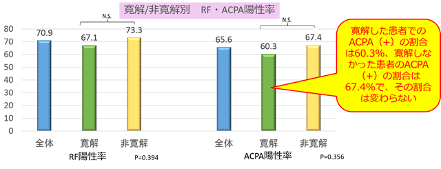

対オレンシア②セロポジ
治療前RF/ACPAとアクテムラの治療効果は関連しない（フランス）
- ●フランスの日常臨床下で、TCZ治療を行ったRA患者204名
- ●24週時のDAS28寛解率/EULAR responseと、背景因子（性別、年齢、喫煙歴、CVD歴、DAS28、CRP、RF陽性、ACPA陽性、DMARDs併用、TCZの使用順）の関係を評価した。
- ●EULAR response：86.1％、DAS28-ESR寛解率：40％

アクテムラの有効性は、RF/ACPAに影響しないという再現性のある結果が出ている